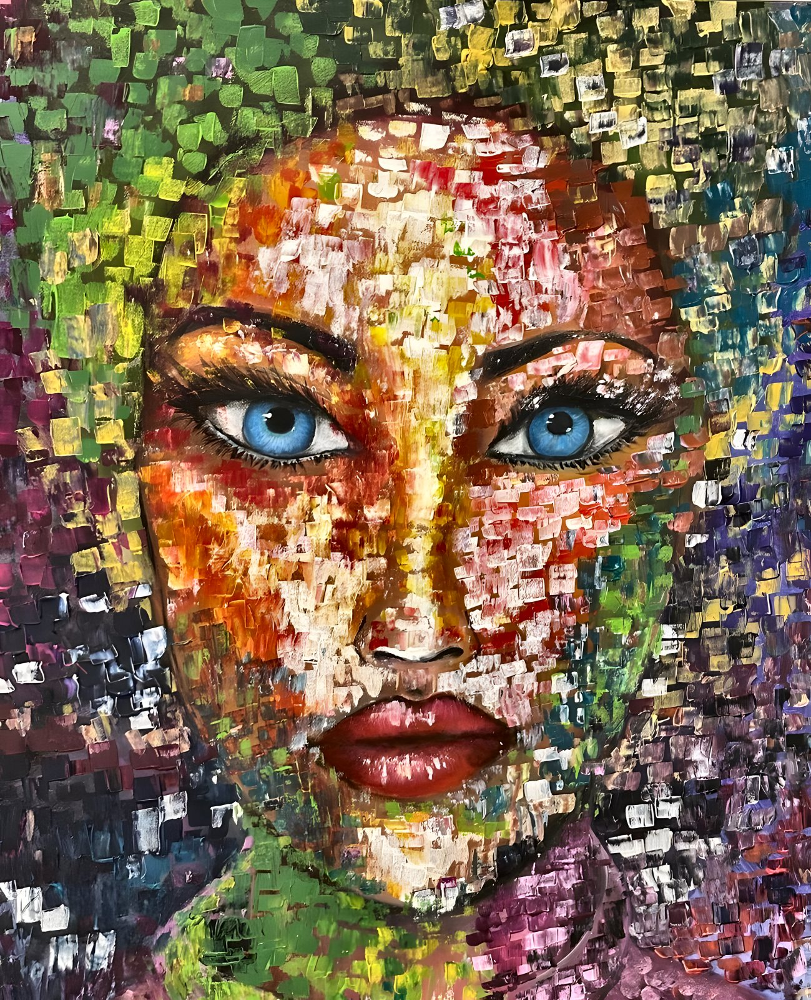
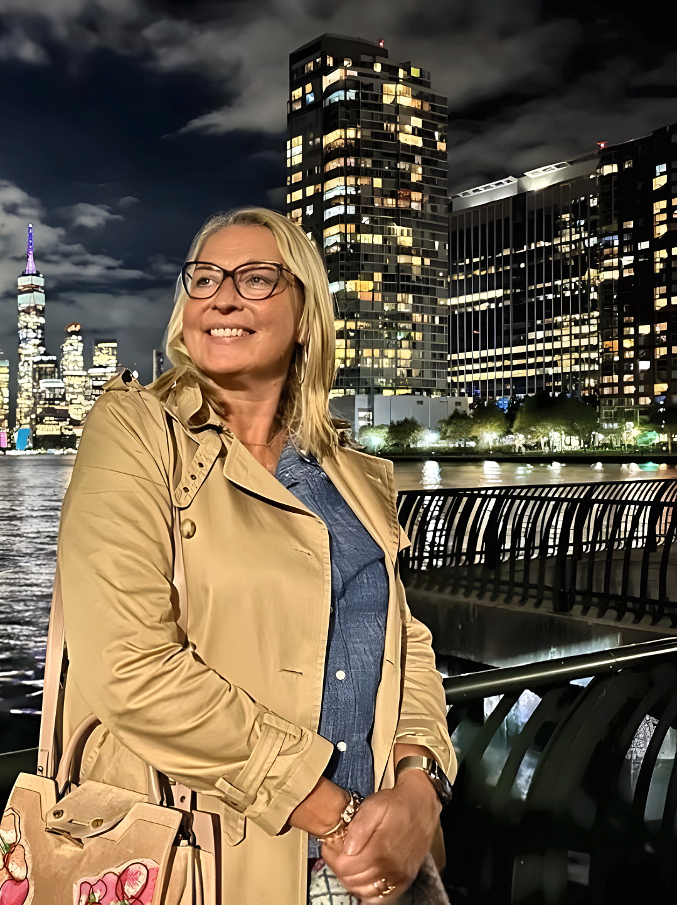
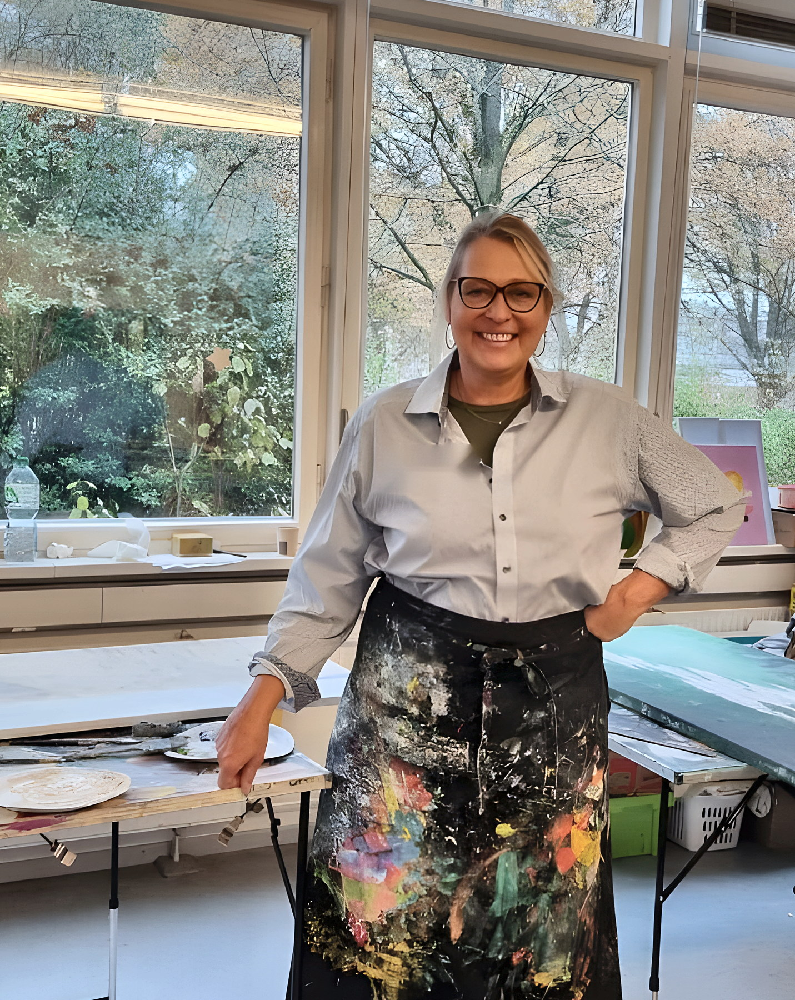

Malerei · Spachtel · Pastos
Andrea Lerch
Farbe in Schichten. Blicke, die bleiben.
Porträts und Metropolen, signiert ale.

Werkverzeichnis
Neun Werke,
eines nach dem anderen
Scrolle weiter — jedes Bild tritt nach vorn, bleibt stehen und macht dann Platz für das nächste.
scrollen
Auflösung
Jede Spachtelkante,
gestochen scharf
Alle Werke liegen in 4K vor — nah genug, um die Grate der Farbe zu sehen. Scrolle, um herauszugehen.
Panorama
Rote Nacht,
Meter für Meter

Die Künstlerin
Andrea Lerch
Andrea Lerch malt mit spürbarer Materie. Spachtel und pastose Schichten formen Gesichter und Städte nicht als glatte Abbilder, sondern als verdichtete Stimmung — Farbe neben Farbe, Kante neben Kante.
Unter dem Kürzel ale entstehen Porträts mit direktem Blick und Stadtbilder mit architektonischem Puls. Zwischen expressiver Nähe und urbaner Weite sucht sie den Moment, in dem ein Bild anfängt zu atmen.
- Technik
- Spachtel, Öl & Acryl
- Motive
- Porträt, Metropole
- Signatur
- ale / AL
Atelier
Ein Werk
in Ihrem Raum?
hello@andrealerch.art
Anfragen zu Werken, Preisen und Ausstellungen. E-Mail-Adresse bitte anpassen.